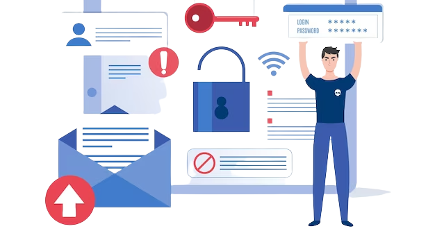

- Policy: There are three policies available for the email receiver to determine how to handle emails that do not pass authentication: p none, p quarantine, and p reject.
- Reporting: Domain owners can receive detailed reports on the authentication results of their emails through DMARC, which also offers valuable insights into email delivery, authentication failures, and potential threats.
- Alignment: The alignment of the "From" domain in the email's header with the domains used in SPF and DKIM authentication is ensured by DMARC. This alignment aids in the identification and prevention of email spoofing and impersonation.
- p=none: During the early stages of DMARC implementation, this policy enables domain owners to observe email authentication without affecting the delivery of emails. It serves as an informational measure.
- p=quarantine: Unauthenticated emails should be regarded as suspicious according to this policy, and they should be directed to the recipient's spam or quarantine folder.
- p=reject: Unauthenticated emails will be outright rejected by this policy, which is the most stringent, resulting in non-delivery to the recipient's inbox.
- Email deliverability: By reducing the likelihood of emails being flagged as spam or phishing attempts, DMARC aids in enhancing email deliverability rates.
- Brand protection: Domain owners can safeguard their brand reputation by preventing email spoofing and impersonation through the implementation of DMARC.
- Reduced email fraud: By authenticating the sender's identity, DMARC effectively decreases the likelihood of email fraud, including phishing attacks and CEO fraud.
What is DMARC?
Optimizing Email Security And Trustworthiness
Optimizing Email Security And Trustworthiness
In today's digital age, email is a crucial communication tool for businesses and individuals alike. However, with the increasing prevalence of phishing attacks, spam, and other email-based threats, it's more important than ever to ensure the security and trustworthiness of your emails. That's where DMARC comes in.
DMARC, which stands for Domain-based Message Authentication, Reporting, and Conformance, is an email authentication protocol designed to prevent email fraud and protect domain reputation. By implementing DMARC, organizations can ensure that only legitimate emails from authorized senders are delivered to their recipients, while blocking fraudulent emails that impersonate their brand.
DMARC also provides valuable reporting capabilities, allowing organizations to monitor and analyze email activity and identify any suspicious behavior. In this blog post, we'll delve into the details of DMARC, explaining how it works, why it's important, and how you can optimize your email security and trustworthiness with this powerful tool. To find out more about what DMARC is, visit a webpage.

What is DMARC?
DMARC, which stands for Domain-based Message Authentication, Reporting, and Conformance, is an email authentication protocol designed to address email fraud and misuse. It allows domain owners to specify the actions email receivers should take when handling unauthenticated emails sent from their domain.
How Does DMARC Work?
DMARC operates by combining the existing email authentication protocols, SPF and DKIM. SPF ensures that an email originated from an authorized server, while DKIM ensures the integrity of the email's content. DMARC improves upon these protocols by allowing domain owners to establish their email authentication policies and instructing email receivers on how to handle failed authentication emails.
DMARC consists of various elements.
There are three main components that make up DMARC.
The DMARC Policies include p none, p quarantine, and p reject.
There are three possible policies for DMARC, which dictate how the recipient of an email should handle emails that do not pass authentication.
Enhancing Email Security through DMARC Implementation
1. Publish a DMARC record:
It is necessary for domain owners to include a DMARC record in their DNS (Domain Name System) which outlines their DMARC policies and reporting needs.
2. Configure SPF and DKIM:
Having SPF and DKIM configured for their domain is a requirement for domain owners before implementing DMARC.
3. Gradually enforce DMARC policies:
Domain owners are advised to begin with a p none policy and assess the DMARC reports they receive. By utilizing the knowledge acquired, they can progressively implement more stringent policies.
Benefits of DMARC
Domain owners and email recipients can experience various advantages by implementing DMARC.
In summary, DMARC is a powerful email authentication protocol that helps protect businesses and their customers from email-based scams and phishing attacks. By implementing DMARC, organizations can ensure that only legitimate emails are delivered to their customers, while also building trust and credibility with their brand. While DMARC may seem like a complex protocol, it is relatively easy to set up and can be an effective tool in securing your email communications. As more and more businesses move towards digital communication, implementing DMARC is becoming increasingly important to maintain email security and trustworthiness.